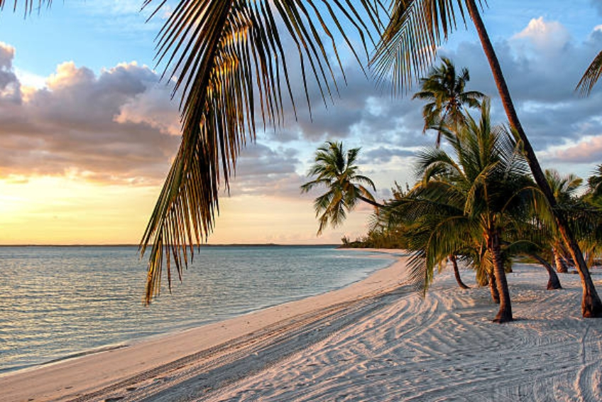
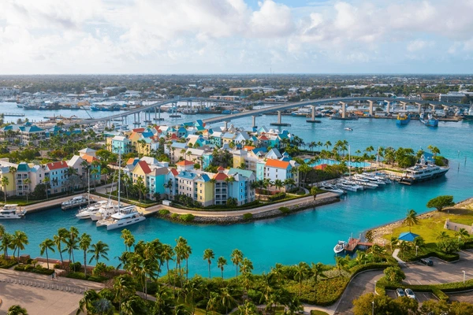

|  |  |
Le Bahamas sono un arcipelago corallino nell'Oceano Atlantico. Sono costituite da oltre 700 isole e isole coralline, alcune disabitate, altre ricolme di resort. Grand Bahama e Paradise Island a nord sono tra le più famose e ospitano molti alberghi di grandi dimensioni. Le immersioni subacquee e lo snorkeling si svolgono presso la Grande Barriera Corallina di Andros, la grotta Thunderball (utilizzata nei film di James Bond) e i giardini di corallo nero di Bimini Le Bahamas sono famose per le loro spiagge da cartolina, con sabbia bianca finissima, acque cristalline e paesaggi idilliaci. Ci sono numerose spiagge incantevoli sparpagliate tra le diverse isole dell'arcipelago.
L’arcipelago delle Bahamas è formato da circa 700 isole ed è un paese pieno di parchi, riserve naturali, spiagge meravigliose e mare dalle acque cristalline e inoltre è presente una delle più grandi barriere coralline del mondo. Qui è possibile ammirare alcune tra le spiagge più famose e belle al mondo. La prima spiaggia imperdibile è quella di Cable Beach che dista pochi chilometri dal centro della città di Nassau. Qui troverete sabbia bianca, mare cristallino e tanti coloratissimi pesci tropicali, ed è una meta ideale per chi è amante dello snorkelling. Altra imperdibile spiaggia è quella di Pink Sands Beach, una spiaggia di sabbia rosa. Lunga 4 chilometri e larga 1 metro è una delle spiagge più belle e famose al mondo, una vera meraviglia della natura. Per chi ama le immersioni e praticare lo snorkeling deve assolutamente visitare la barriera corallina delle Bahamas, dove è possibile ammirare circa 170 specie diverse di pesci e coralli. Il miglior nodo per ammirare la barriera corallina delle Bahamas bisogna recarsi all’isola di Andros. La barriera corallina di Andros è il terzo sistema corallino del mondo per dimensioni.
Per tornare alla pagina principale clicca HOME